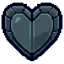
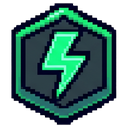
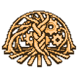

— UM PRÉDIO · TODOS OS UNIVERSOS —
BLOCO 404
Suba de andar. Descubra quem mora em cada um.
ou pressione ENTER
X: 0 Y: 0 | ZOOM: 100%

VIDA --- / ---
ENERGIA 100 / 100
● -- FPS
W/S AVANÇAR / RÉ · A/D GIRAR · SHIFT ACELERAR · R SONAR · L FAROL · E NADAR / EMBARCAR
A neblina se abre. O barco atraca; o sinal vem do interior. A incursão foi registrada.
O interior das docas ainda será construído. Seu retorno à Enseada está disponível.
...
— UM PRÉDIO · TODOS OS UNIVERSOS —
Suba de andar. Descubra quem mora em cada um.
ou pressione ENTER
BLOCO 404 // ARQUIVO CENTRAL
MOVA O MOUSE PARA OLHAR AO REDOR